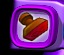

Project Intro
For this unit we are going to learn a brand new tool in Kid Pix - The Stamp Tool. Stamps in Kid Pix are little drawings that we can put onto Kid Pix quickly. We will be using Stamps to make scenes showing Mammals, Reptiles, and other animals.
Teaching Point:
Today we will learn how to use the Stamp Tool in Kid Pix.
Using the Stamp Tool
The Stamp Tool makes it easy to make pictures of different scenes very quickly. We can use stamps of buildings to make a picture of a city, or stamps of nature to make a picture of a forest or an ocean. There are MANY different stamps we can choose from. To use the Stamp Tool:
- Click on the Stamp Tool
- Use the Up and Down menu buttons to find a stamp you want.
- Choose the Stamp.
- Click on the part of the page that you want the Stamp to go on. You can use one Stamp as many times as you want.
Today's Assignment
Practice using the Stamp Tool to make a picture. Try to make the picture as neat as you can.
Back to School Portal